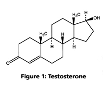
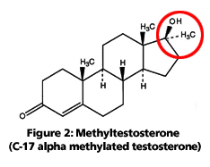
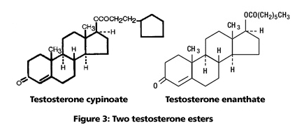

DISCLAIMER
The information contained herein is to be used for educational purposes only.
The author is not a medical professional, and this information should not be
considered medical advice. This information should NOT be used to replace
consultation with or treatment by a trained medical professional. The listing
of a medication herein does not imply endorsement by the author.
Introduction
What are "bioidentical hormones?"
What are "natural" versus "synthetic" hormones?
Why would a drug company want to modify testosterone in the first place?
Why do some people prefer bioidentical hormones?
Which types of testosterone are bioidentical?
Resources
Introduction
"Bioidentical" hormone therapy has recently become a hot topic in the media. People who are on a regimen of testosterone therapy may wonder what bioidentical hormones are, and if the testosterone they are taking is bioidentical. This page addresses some of the basic questions about bioidentical hormones-- specifically testosterone-- but refrains from drawing hard conclusions over whether bioidentical hormones are better than, worse than, or equivalent to so-called "synthetic" medications.
The reader who is new to the concepts of FTM testosterone therapy may first wish to brush up on hormone basics before reading this page, as well as basics about testosterone types and delivery methods, and information on compounding pharmacies.
What are "bioidentical hormones?"
A "bioidentical hormone" refers to a substance that has the exact same chemical structure as a hormone that is naturally produced in the body. For example, the testosterone that is naturally produced in the human body has the chemical formula C19H28O2 and the following chemical structure:

In order for prescription testosterone to be considered "bioidentical," its chemical structure should match the above structure identically. (Bear in mind that even though the illustration shown above looks flat, molecules in real life are three dimensional. Even minor changes in a chemical structure can change the overall shape of a molecule, and thus can affect its ability to bond with other molecules and perform certain tasks in the body.)
What are "natural" versus "synthetic" hormones?
When reading the latest buzzwords about hormone therapy, the use of the terms "natural" and "synthetic" can be very confusing. This is because the word "bioidentical" is often equated to "natural," while being contrasted with "synthetic" and "man-made." These generalizations can be a bit misleading; we'll examine them more closely in order to better understand the differences between different testosterone treatments.
First, the term "natural" is often used to mean something that is found in nature, or something that is not man-made. In the case of testosterone, the "natural" form of the hormone is produced in the glands of the body; its chemical structure is shown above in Figure 1.
Next, let's recall that "bioidentical" testosterone is defined as having the exact same chemical structure as the "natural" testosterone that is created by the body. In this sense, "bioidentical" testosterone matches "natural" testosterone on the molecular level.
If there is any chemical modification to the testosterone molecule (such as adding a side chain or functional group), it no longer fits under the definition of "bioidentical." This is what is often referred to as a "synthetic" hormone-- a substance that has been modified in chemical structure from how it would occur naturally. An example of a "synthetic" hormone would be methyltestosterone (Figure 2, below), which is the testosterone hormone with an added methyl group (CH3) at the c-17 alpha position of the molecule (modified area shown within the red circle).

As illustrated in the case of methyltestosterone, the word "synthetic" is used to indicate a variation of a hormone created in a laboratory that does not chemically match the hormone as naturally made by the body.
It is important to note at this point that all forms of prescription testosterone-- whether they are "bioidentical" or "synthetic"-- are created in laboratories using chemical means. The vast majority of prescription testosterone (cream, gel, injectable, patch, subcutaneous, etc.) is derived from plant sources such as soybeans and yams. Soybeans and yams are natural substances that are put through a chemical synthesis in a laboratory setting to derive the end product of testosterone. Both bioidentical and non-bioidentical testosterone drugs are synthesized in this manner.
In summary, all testosterone drug preparations are man-made, typically from plant-based sources. "Bioidentical" testosterone exactly matches the chemical structure of "natural" testosterone, but is made in a laboratory just like other non-bioidentical forms of testosterone. Even though all forms of testosterone preparations are synthesized in a laboratory setting, the word "synthetic" is usually used to refer to non-bioidentical forms of testosterone.
Why would a drug company want to modify testosterone in the first place?
There are two main reasons why a drug company might want to modify a naturally-occuring substance such as testosterone. The first is functionality (i.e. so that the substance is able to be used successfully by the body), and the second is patentability and profit. In the specific case of testosterone, most of the modifications that we see are done for the sake of functionality, which is explained further below. Patentability and profit is also briefly addressed at the end of this section.
On the topic of functionality, a specific group of atoms (called a "functional group") may be added to the testosterone molecule in order to help make the hormone "bioavailable" (i.e., able to be absorbed and used by the body). Depending on the method of delivery (taking an injection versus swallowing a pill, for example), this may involve using different functional groups to serve different purposes.
Injectable testosterone modifications
In the case of injectable testosterone, an "ester" functional group is usually added to the testosterone molecule (see Figure 3, below). An "ester" is simply a name for a chemical compound that is formed from a reaction between a carboxylic acid and an alcohol. There are many different ester groups that can be added to testosterone: cypionate, enanthate, acetate, propionate, phenylpropionate, isocaproate,
caproate, decanoate, and undecanoate, to name the most common ones.

Ester groups are added to improve the solubility of testosterone in oil, which in turn slows the release of the testosterone from its injection site into the blood stream. Without an added ester group, injectable testosterone would enter the blood stream very quickly, and would have to be administered in small doses daily (or several times a day) in order to maintain acceptable levels of the hormone in the body. Thus, adding an ester group to an injectable allows for a relatively easy dosing regimen, far fewer shots, and a slow release of hormone into the system. (For a more detailed description of testosterone esters, see the Testosterone Types and Delivery page.)
As a testosterone ester enters the blood stream, the ester group is cleaved off by "esterase enzymes" in a process known as "hydrolization." Once the ester group has been removed by these enzymes, the testosterone is returned to its "bioidentical" form, thus making it bioavailable and ready to perform its various actions and effects.
Oral testosterone modifications
In the case of oral delivery, modifications have been made to the testosterone molecule to try to combat problems caused by the "first pass effect." Drugs that are taken orally (i.e., swallowed) are absorbed from the gastrointestinal tract and pass via the portal vein into the liver. If bioidentical testosterone is given orally, a very large portion is metabolized during this "first pass" through the liver, and therefore it cannot become bioavailable to do its work in the body.
One of the earliest attempts to address this issue was the development of methyltestosterone (where a methyl group was added at the c-17 alpha position of the testosterone molecule; Figure 2). The use of methylated testosterone did have the result of making oral testosterone more readily bioavailable, but it also was found to be very hard on the liver, and thus caused health problems. Because of this, methyltestosterone is rarely used for hormone therapy today, as safer forms of delivery have become available.
A more recent development in oral testosterone delivery is the use of a capsule form of testosterone undecanoate, a testosterone ester dissolved in oleic acid. Because it is designed to be absorbed through the small intestine into the lymphatic system (thus circumventing the "first pass" through the liver), it poses less burden on the liver than methyltestosterone. Therefore, it is considered a safer oral form of testosterone. (Oral testosterone undecanoate is not available in the United States.)
Patents and profit
The second reason a drug company might try to modify a naturally-occurring substance such as testosterone is for the sake of being able to create a unique formulation that can be patented and sold exclusively by that company for a period of time.
Testosterone is a substance that occurs naturally in the human body. Therefore, a drug company cannot patent the manufacture of simple testosterone in its natural configuration, because they did not invent the chemical formula for that hormone-- they merely copy the blueprint nature has already provided for them. However, if a drug company chemically modifies a hormone's structure in a unique fashion, or develops a new formulation/system for a unique delivery method of a hormone, that company may apply for a patent for that drug. If their newly-created drug is approved by the Food and Drug Administration (FDA) for safety and their patent is accepted, then they may then profit solely from the drug's manufacture for a number of years before other companies can create generic or brand-name equivalents.
While drug companies certainly can profit from modifying testosterone in new ways, or by figuring out new and unique methods for getting the hormone into the system, the fact is that many tried-and-true delivery methods of testosterone have already been developed, and most of these testosterone types can be found in low-cost generic equivalents or compounded forms. Injectable testosterone esters, for example, are available as brand-name products from large pharmaceutical companies, but also as lower-cost generics and in formulas that can be produced by small compounding pharmacies. Testosterone creams, gels, pellets, and buccal systems are also available in generic and/or compounded formulations. In the case of prescription testosterone therapy, both patient and doctor have a number of options from which to choose.
Why do some people prefer bioidentical hormones?
Proponents of bioidentical hormones claim that because such hormones are identical in chemical structure to the hormones produced by the body, our bodies will metabolize them as they designed to do, thereby minimizing negative side effects. While this is certainly a sensible-sounding theory, there has been little study comparing bioidentical hormones to non-bioidentical preparations, and therefore little data is available to make sweeping conclusions about any differences in side effects or results.
It is true that negative side effects to the liver have been shown in the case of orally-administered methyltestosterone (a non-bioidentical testosterone), as described in the previous section. This is why oral methyltestosterone is rarely used for testosterone therapy, as safer alternatives are available.
As for whether bioidentical testosterone preparations are safer, more effective, or show fewer side effects than testosterone ester formulations, there is little data available for comparison. Recall, too, that once a testosterone ester has entered the bloodstream, the ester group is cleaved off of the molecule by an enzyme, returning the testosterone molecule to its free, bioidentical state. The testosterone is then metabolized by the body just as natural testosterone would be metabolized.
Whatever hormone regimen you choose, continue to work with your doctor. They will order periodic blood tests and other tests to monitor your hormone levels and overall health. If you and your doctor choose to use a compounding pharmacy to fill your hormone prescription, be sure to choose a reputable pharmacy that utilizes the proper technology and facilities needed to prepare your medication in a safe and appropriate manner. (For information on blood tests and other health exams for trans men, see FTM Testosterone Therapy and General Health. For more information on compounding, see the Compounding Pharmacies page.)
Which types of testosterone are bioidentical?
It is important to understand that in the United States, testosterone is considered a Schedule III controlled substance, and is not available without a prescription from a doctor. Therefore, if you see internet advertisements for "testosterone" creams, pills, or gels that do not require a prescription, understand that those products do not contain testosterone. Additionally, the buyer should beware of nutritional supplements, or so-called "pro-hormones" and "hormone pre-cursors" that promise to increase testosterone levels. Such products do not contain testosterone, they do not work in the same manner as prescribed testosterone, and they are not tested for safety and effectiveness by the U.S. Food and Drug Administration (FDA).
Once you have been approved by your doctor for testosterone therapy, there are a variety of options for how your doctor can write a prescription. The most common method of testosterone therapy for trans men is subcutaneous or intramuscular injection with a syringe. Other delivery methods include transdermal systems via gel, cream, or patch applied to the skin; orally by swallowing tablets or capsules (uncommon in the U.S.); sublingually/buccally by dissolving a tablet under the tongue or against the gums; or by a pellet inserted under the skin. (For more information on the variety of prescription testosterone medications, see the Testosterone Types and Delivery page.)
Transdermal (i.e., medication is absorbed through the skin)
In general, most transdermal forms of prescription testosterone (such as gels, creams, and patches) contain bioidentical testosterone. Because bioidentical testosterone becomes active quickly once absorbed through the skin, it must be applied daily to maintain appropriate levels of testosterone in the body. Depending on the formulation, transdermal preparations might also include additional ingredients to accelerate the absorption of the testosterone through the skin. Some of these ingredients can cause side effects, such as rashes and skin irritation. Transdermal testosterone is available in both brand-name and compounded preparations; a prescription for compounded transdermal testosterone can be tailored by your doctor for your specific dosage requirements. (For more information on transdermal testosterone systems, see the Testosterone Types and Delivery page. For more information on compounding, see the Compounding Pharmacies page.)
Sublingual/buccal
Sublingual and buccal testosterone treatments, which are dissolved in the mouth rather than swallowed, are generally made with bioidentical testosterone. Sublingual preparations are dissolved under the tongue; these can be prepared by compounding pharmacies. Buccal testosterone delivery works placing a tablet against the surface
of the gums. Buccal testosterone systems are available as name-brand or compounded preparations. Sublingual/buccal delivery is different from oral delivery in that very little
of the substance is swallowed, avoiding potential "first pass effect" problems with the liver. Because bioidentical testosterone is absorbed quickly through sublingual/buccal routes, it must be applied more than once a day to maintain appropriate levels of testosterone in the body. (For more information on sublingual and buccal testosterone systems, see the Testosterone Types and Delivery page. For more information on compounding, see the Compounding Pharmacies page.)
Subcutaneous pellet
Subcutaneous testosterone pellets are made of bioidentical, crystalline testosterone that is implanted beneath the skin. The pellets are about the size of a grain of rice, and are typically placed in the buttocks or abdomen by a doctor. Because of their crystalline form, the testosterone in subcutaneous pellets is released slowly over a period of weeks or months. (For more information on subcutaneous testosterone systems, see the Testosterone Types and Delivery page. For more information on compounding, see the Compounding Pharmacies page.)
Injectables
As mentioned previously on this page, injectable testosterone is prepared mainly in the form of testosterone esters such as testosterone cypionate or testosterone enanthate. (For a more detailed description of testosterone esters, see the Testosterone Types and Delivery page.) Because a testosterone ester is a modified form of the testosterone molecule, it should not technically be considered a bioidentical form of testosterone. However, when testosterone esters are released into the bloodstream, the ester group is cleaved off by "esterase enzymes" in a process known as "hydrolization." Once the ester group has been removed by these enzymes, the testosterone is returned to its free, bioidentical form, thus making it bioavailable and ready to perform its various actions and effects. (For more information on injectable testosterone systems, see the Testosterone Types and Delivery page. For more information on compounding, see the Compounding Pharmacies page.)
Oral
Bioidentical testosterone is never taken orally since it will be immediately deactivated by the liver due to the "first pass effect." Two non-bioidentical forms of testosterone have been used in testosterone therapy: methyltestosterone and testosterone undecanoate.
As mentioned previously, methyltestosterone is one of the earliest available oral testosterones. Its chemical structure is the hormone testosterone with an added methyl group at the c-17 alpha position of the molecule. The use of oral c-17 alpha methylated testosterone is not recommended due to its potential toxicity to the liver.
Testosterone undecanoate is not a c-17 alpha methylated hormone, it is a testosterone ester. Because it is designed to be absorbed through the small intestine into the lymphatic system (thus circumventing the "first pass" through the liver), it poses less burden on the liver than methyltestosterone. Therefore, it is considered a safer oral form of testosterone. Oral testosterone undecanoate is not available in the United States. (For more information on oral testosterone systems, see the Testosterone Types and Delivery page. For more information on compounding, see the Compounding Pharmacies page.)
If you are unsure if the prescription testosterone you are using is bioidentical, check the prescription information sheet to read both the chemical formula and chemical structure. This information should be provided to you with the medication.
Was this page helpful to you?
Please consider donating to ftmguide.org!
Greenspan, Francis S. and Gardner, David G., eds., Basic and Clinical Endocrinology, 2004, Lange Medical Books/McGrawHill, 2004.
Ebbing, Darrell D., General Chemistry, Houghton Mifflin, 1987.
Prescribing information sheets for:
Testosterone Cypionate (www.pfizer.com/pfizer/download/uspi_depo_testosterone.pdf)
Androderm Testosterone Transdermal System (www.androderm.com)
Androgel Topical Testosterone (www.androgel.com)
Striant Buccal Testosterone system (www.striant.com/Consumer/striant_consumer_home.asp)
Organon's Testosterone Implant Pellet (emc.medicines.org.uk/emc/assets/c/html/displaydoc.asp?documentid=7303)
U.S. National Library of Medicine and
National Institute's of Health
PubMed
www.ncbi.nlm.nih.gov/entrez
WebMD
www.webmd.com
Trans-Health
www.trans-health.com
U.S. National Library of Medicine and
National Institute's of Health
Medline Encyclopedia
www.nlm.nih.gov/medlineplus/encyclopedia.html
Back to Hudson's FTM Resource Guide main page
Copyright, disclaimer, and privacy information